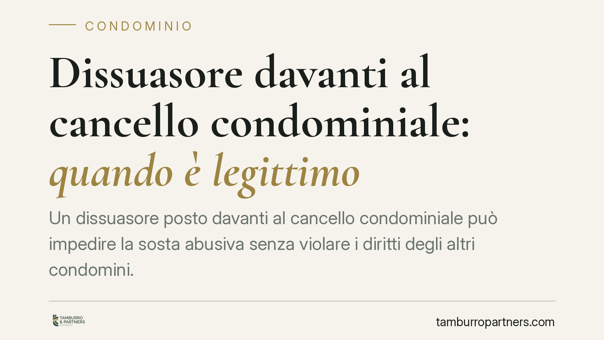

Dissuasore davanti al cancello condominiale: quando è legittimo
Un dissuasore posto davanti al cancello condominiale può impedire la sosta abusiva senza violare i diritti degli altri condomini. Secondo un recente orientamento della Cassazione, anche la sosta breve può integrare abuso della cosa comune quando ostacola il pari uso dello spazio. La questione ruota attorno all'art. 1102 del Codice civile e ai suoi due limiti classici.

Il caso
La vicenda è frequente: uno spazio comune davanti al cancello viene occupato da soste di veicoli, anche brevi, che ostacolano il transito degli altri condomini. Per porvi rimedio si installa un dissuasore. Il condomino penalizzato contesta l'iniziativa, sostenendo che le soste erano di pochi minuti e non integravano un vero abuso.
Secondo un recente orientamento della Corte di Cassazione, Sez. II Civile, l'installazione del dissuasore può essere legittima quando serve a garantire il pari uso dello spazio comune. Il punto centrale è che la durata della sosta non è, da sola, decisiva.
Inquadramento normativo
La norma di riferimento è l'art. 1102 del Codice civile, che regola l'uso della cosa comune da parte del singolo partecipante. La disposizione fissa due limiti precisi.
Il primo limite è la destinazione: ciascun condomino può servirsi del bene comune purché non ne alteri la funzione. Il secondo limite è il pari uso: non si può usare la cosa comune in modo da impedire agli altri di farne un uso analogo e paritario.
È su questo secondo limite che si concentra l'orientamento richiamato. Occupare lo spazio davanti al cancello, anche per poco tempo, può compromettere la possibilità degli altri di transitare e utilizzare l'area. In questa lettura, l'abuso non si misura sul cronometro, ma sulla funzione.
Dal criterio temporale a quello funzionale
Il passaggio è rilevante. In passato si tendeva a valutare la liceità della sosta guardando alla sua durata: sosta breve, tolleranza; sosta prolungata, abuso. L'orientamento più recente sposta il baricentro dal criterio temporale a quello funzionale.
La domanda non è più "per quanto tempo è stato occupato lo spazio?", ma "quell'occupazione ha impedito agli altri il pari uso del bene?". Se la risposta è affermativa, anche una sosta di pochi minuti può costituire abuso della cosa comune ai sensi dell'art. 1102 c.c.
Di conseguenza, un dissuasore che protegga la fruibilità dell'area per tutti i condomini si colloca dentro il perimetro dell'uso legittimo, non contro di esso.
Implicazioni pratiche
Per il singolo condomino, ciò significa che l'abitudine di lasciare l'auto "un attimo" davanti al cancello non è necessariamente coperta da tolleranza. Se ostacola il passaggio o l'uso comune, può essere contestata.
Per il condominio e l'amministratore, la valutazione sull'installazione di un dissuasore non è libera. Occorre distinguere tra dispositivi mobili o temporanei e strutture fisse. L'installazione di dissuasori fissi incide sullo stato dei luoghi e richiede, di regola, una delibera assembleare che ne autorizzi la collocazione. Procedere senza il passaggio assembleare espone a possibili contestazioni sulla regolarità dell'intervento.
Va poi tenuto presente che la legittimità dipende dalla configurazione concreta dello spazio: la stessa soluzione può risultare corretta in un contesto e sproporzionata in un altro, ad esempio se limita l'accesso di alcuni condomini oltre il necessario.
Cosa fare in concreto
- Verificate la destinazione dello spazio davanti al cancello: appurate se è area di transito comune, posto auto assegnato o zona a uso promiscuo.
- Portate la questione in assemblea prima di installare dissuasori fissi: la delibera è il presupposto per interventi che modificano lo stato dei luoghi.
- Documentate l'ostacolo al pari uso: fotografie, segnalazioni e verbali aiutano a dimostrare che la sosta compromette la fruibilità comune, a prescindere dalla durata.
- Scegliete una soluzione proporzionata: il dissuasore deve garantire il transito di tutti, non introdurre limitazioni ulteriori a danno di alcuni condomini.
- Valutate caso per caso: la legittimità va accertata in base alla configurazione concreta degli spazi e all'effettivo pregiudizio al pari uso.
Nota
Gli estremi esatti della pronuncia (numero, sezione e data) vanno confermati con la massima ufficiale prima di ogni citazione puntuale. L'inquadramento sull'art. 1102 c.c. resta comunque il riferimento normativo corretto della materia.
---
*Contributo informativo a cura di Tamburro & Partners Avvocati - Avv. Giuseppe Tamburro. Non costituisce parere legale.*
Ogni condominio ha una storia a sé.
Se gestisci un'amministrazione e vuoi un confronto su una specifica questione condominiale, scrivi allo studio. Ti rispondiamo entro un giorno lavorativo.